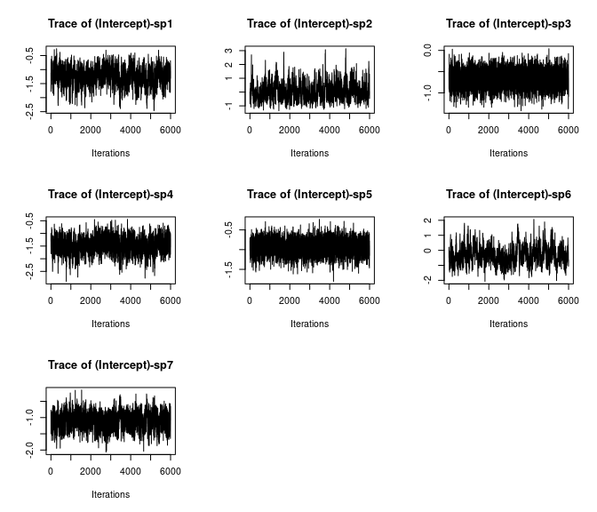
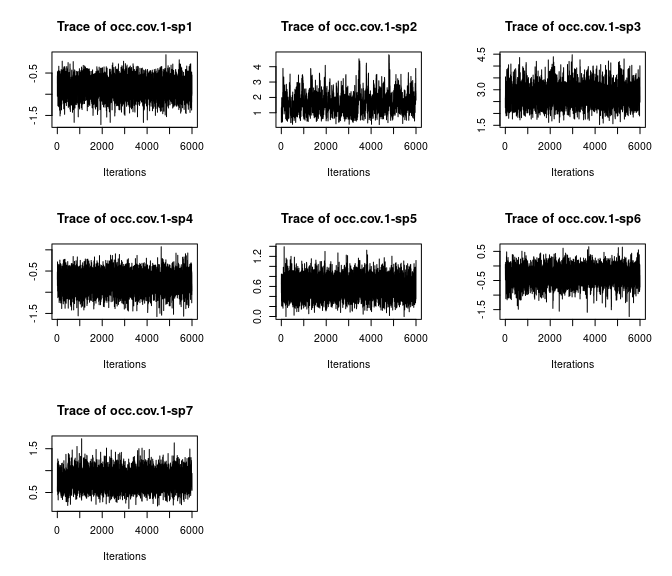
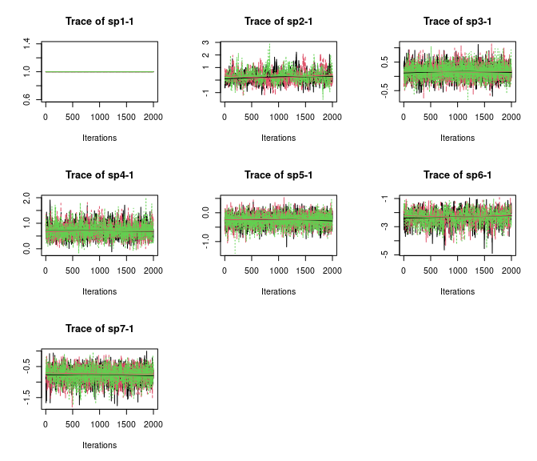
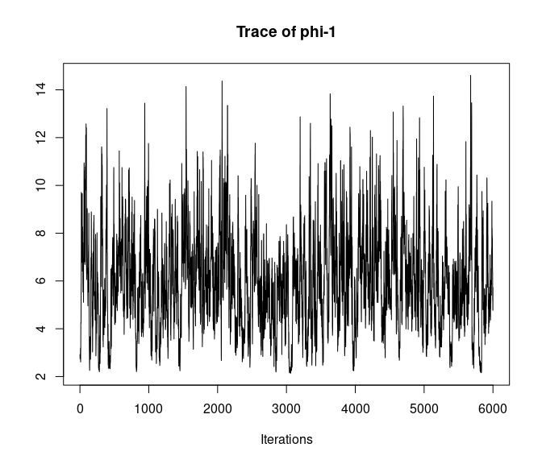
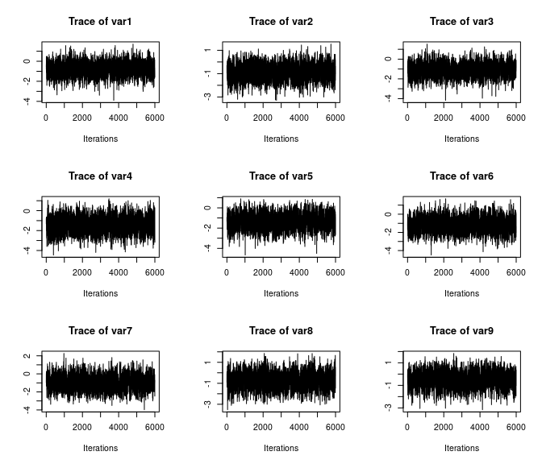

Convergence diagnostics and other considerations when fitting spatial occupancy models
Jeffrey W. Doser
2023 (last update: July 20, 2023)
Source:vignettes/modelConsiderations.Rmd
modelConsiderations.RmdIntroduction
In this article, I discuss issues related to convergence, identifiability, and priors in spatially-explicit models fit in spOccupancy. I come at these topics from a practical perspective, focusing on the implications of identifiability and convergence issues for researchers interested in fitting such models in spOccupancy. Identifiability of parameters in Bayesian analysis is a very wide-ranging and complex area of study, and this article is not intended to assess identifiability of these models in a formal statistical manner. For an interesting starting point on identifiability in Bayesian analysis (and a variety of references mentioned throughout), I encourage you to take a look at this blog post from Andrew Gelman, as well as the discussion that follows the original post. I have also provided a variety of references throughout to the statistical literature that discuss identifiability in factor models from a much more rigorous perspective.
This document is intended to be updated with additional guidance and information on some of the more finicky parts of fitting the spatially-explicit models available in spOccupancy. Much of this document focuses on spatial factor occupancy models (i.e., spatially-explicit joint species distribution models with imperfect detection), some of which comes from Appendix S3 in our open access paper on spatial factor multi-species occupancy models (Doser, Finley, and Banerjee (2023)). However, I also address topics (i.e., choices of priors on spatial parameters) that are relevant for spatially-varying coefficient occupancy models and spatial occupancy models.
Specifying the prior for the spatial decay parameter \(\phi\) in spatial occupancy models
The prior on the spatial decay parameter \(\phi\) in all forms of spatial occupancy models can be essential for adequate convergence of the model. Recall that the spatial decay parameter \(\phi\) controls the range of the spatial dependence. For the exponential correlation model, the spatial decay parameter \(\phi\) has a nice interpretation in that \(\frac{3}{\phi}\) is the effective spatial range. The effective spatial range is defined as the distance between sites at which the spatial autocorrelation falls to a small value (0.05), and thus can be interpreted as how far across space the spatial autocorrelation between two sites goes. From an ecological perspective, this is a fairly intuitive parameter that can be related to a lot of interesting processes such as the dispersal distance of the species you’re working with, the underlying spatial pattern of any missing covariates that are not included in the model, or a result of the specific study design chosen (e.g., if sites are collected in a cluster sampling design). However, in the type of spatial models we fit in spOccupancy (i.e., point-referenced spatial models), the spatial decay parameter \(\phi\) and the spatial variance parameter \(\sigma^2\) (which controls the magnitude of the spatial variability) are only weakly identifiable. Theoretical work shows the product of the two parameters is identifiable, but that the two parameters individually are only weakly identifiable (Zhang 2004). This is related to the intuitive idea that without any additional information, our model would not be able to distinguish between very fine-scale (i.e., small effective range, high \(\phi\)) spatial variability with a small spatial variance and very broad-scale spatial variability (i.e., high effective range, small \(\phi\)) with low-magnitude spatial variance. Without going into the statistical details, this means that our priors can have an important influence on the resulting values of these two parameters. These problems are even more prominent when working with binary data like we do in occupancy models compared to working with continuous, Gaussian data for which most of the theoretical statistical work regarding these models has been developed. This is generally why I recommend against heavily interpreting the estimates of these two parameters (\(\phi\) and \(\sigma^2\) in any type of spatial occupancy model).
The importance of the priors (and specifically the prior on \(\phi\), which I discuss here) increases as the model becomes complex. More specifically, the prior will be least important for a basic single-species spatial occupancy model, but will often be very important for spatially-varying coefficient occupancy models as well as spatial factor multi-species occupancy models. Our default prior that we place on the spatial decay parameter is Uniform(\(3 / \text{max(dists)}\), \(3 / \text{min(dists)}\)), where dists represents the matrix of inter-site distances between all sites in the data set. When thinking about what this means for an exponential correlation function (which is also the default function in spOccupancy), this means that our prior allows the effective spatial range to be anywhere from the maximum inter-site distance (i.e., broad-scale relative to the study area) to the minimum inter-site distance (i.e., extremely fine-scale relative to the distances between sites). This is quite an uninformative prior, because we essentially are telling the model to determine whether the spatial autocorrelation is large or fine scale only based on the patterns that occur in the data.
While this prior typically works for basic single-species spatial occupancy models (i.e., spPGOcc()) and often works for other more complex models in spOccupancy, it can in some instances lead to problems. In these cases, we may need to use a more informative prior on the spatial decay parameter. When using an exponential correlation model, doing this is relatively intuitive given the interpretation of the effective spatial range as described in the previous paragraph. Below I present a few scenarios in cases where it may be useful to specify a more informative prior on \(\phi\) than what spOccupancy does by default. This is certainly not an exhaustive list, but is meant to give a flavor of some ways in which more informative priors are useful/necessary to achieve convergence of a spatially-explicit model in spOccupancy based on my own experiences fitting these models, and problems that I’ve seen users have.
- Cluster sampling design: consider the case where detection-nondetection data are obtained at multiple points along a transect, and each of these points along the transect is treated as a site in the occupancy model. In such a case, we may want to put a slightly more informative prior on \(\phi\) that reflects the design of the study by ensuring the effective spatial range is at least as large as the length of the transects. So, instead of setting the upper bound of the uniform prior of \(\phi\) to \(3 / \text{min(dists)}\), in this scenario we could set it to \(3 / \text{Transect Length}\). This will ensure we inherently account for the structure of the survey by ensuring the effective spatial range is at least as large as the length of a transect. This is particularly important in situations where sites within a transect are very close together relative to the full spatial extent of the study region.
-
Spatially-varying coefficient occupancy models: for both single-species and multi-species spatially-varying coefficient occupancy models, one may encounter overfitting, such that the resulting spatially-varying coefficient (SVC) estimates are extremely fine scale and do not make much ecological sense. The flexibility of these models is what makes them great in the sense that they can reveal very interesting patterns in the spatial variation of species-environment relationships and/or occupancy trends. However, this flexibility also means that these models can be prone to overfitting. If using the default priors for the spatial decay parameters with SVC models (particularly SVC models with a fairly small number of spatial locations (e.g., < 500 or so)), you may need to increase the lower bound of the effective spatial range to avoid massive overfitting to the data. Remember that in order to set a larger lower bound on the effective spatial range of the spatial variation, you will need to modify the upper bound of the prior on \(\phi\) (since they are inversely correlated). Specifying exactly how to do this is somewhat dependent on the specific data set and objectives of the study. For example, this upper bound could be determined based on the ecology of the species you’re working with. For example, the modified upper bound of the spatial decay parameter’s prior could be based on the home range or dispersal distance of the species you are working with. Alternatively, it can be based on the type of inference you want to draw from the model. If you are interested in determining if there is support for broad-scale variability in a species-environment relationship, this upper bound of \(\phi\) can be set to something like \(3 / \text{quantile(dists, 0.4)}\), which is equivalent to saying the effective spatial range is at least as large as the 40% quantile of the inter-site distances between the data points. Such a prior would allow you to explore if there is any support for medium to large-scale variation in the covariate effect. Alternatively, for more fine-scale variability, you could use a lower quantile of the inter-site distance matrix, so something like
quantile(dists, 0.1). How “fine-scale” this is will depend on the specific orientation of the spatial coordinates in a given data set, so again it may be better to specify a specific distance that represents fine-scale variation across the study region in which you’re working. Overall, SVC models are very flexible, but can also be too flexible in the sense that they are prone to overfitting, so careful consideration of the priors is more important for such models. I suggest first fitting an SVC model with the default prior for the spatial decay parameters, which is relatively uninformative. In some cases when overfitting is occurring, you may see this model fail to converge, in which case you may want to further restrict the upper bound of \(\phi\). In other cases, the model will converge, but after examining the SVC estimates it is clear that overfitting is occurring (e.g., the map of SVCs across spatial locations looks more like white noise than a spatially smooth pattern). In such cases, restricting the upper bound of the uniform prior on \(\phi\) can be important for using SVC models to test/generate hypotheses regarding the drivers of spatial variability in species-environment relationships and/or occupancy trends. - Lack of convergence: in some cases the default prior is not informative enough to yield convergence of the model, and you may see the estimates of \(\phi\) (and also \(\sigma^2\) in the opposite way) flip back and forth between high values (e.g., small effective range) and low values (e.g., high effective range). In such cases, you will likely need to restrict the prior for \(\phi\) to estimate more large-range spatial autocorrelation (i.e., restrict the upper bound of the uniform prior for \(\phi\)) or to estimate more local-scale spatial autocorrelation (i.e., restrict the lower bound of the uniform prior for \(\phi\)). Again, this can be accomplished by using some quantiles of the intersite distance matrix, or by choosing specific distance values that make sense based on the spatial extent of the study region. I will point out that while spatial occupancy models can accommodate pretty fine-scale spatial autocorrelation, they are limited in their ability to estimate extremely fine-scale spatial variability. This is related to the fact that as the effective spatial range decreases towards zero, the spatial correlation in the spatial random effects occurs over a smaller distance, and thus the estimate of the spatial random effect at any given location is informed by a smaller number of data points and eventually becomes an unstructured site-level random effect. For binary data, it is not possible to estimate an unstructured site-level random effect Bolker (2022). Thus, in some cases, we may by necessity have to restrict the upper bound of \(\phi\) to ensure the model does not get “stuck” at extremely small effective spatial range estimates which essentially lead to an unidentifiable model.
In conclusion, this section is meant to give some insight as to when, how, and why it may be useful to specify a more informative prior on \(\phi\). I’ll close by saying that while placing such restrictions on the spatial decay parameter can seem somewhat arbitrary, other approaches for estimating spatial autocorrelation (i.e., maximum likelihood approaches) and/or spatially-varying coefficients (e.g., geographically weighted regression) fix the effective spatial range prior to fitting the model. In general, specifying potentially informative priors on \(\phi\) while exploring different levels of information included in the prior is a robust way to ensuring the model is identifiable, allows us to answer the questions we’re interested in, and allows us to explore the impacts our priors have on the resulting estimates (e.g., via sensitivity analyses).
Choosing the number of latent factors in spatial factor models
Determining the number of latent factors to include in a spatial factor multi-species occupancy model or non-spatial latent factor multi-species occupancy model is not straightforward. Often using as few as 2-5 factors is sufficient, but for particularly large communities (e.g., \(N = 600\)), a larger number of factors may be necessary to accurately represent variability among the species (Tobler et al. 2019; Tikhonov et al. 2020). While other approaches exist to estimate the “optimal” number of factors directly in the modeling framework (Tikhonov et al. 2020), these approaches do not allow for interpretability of the latent factors and the latent factor loadings. The specific restraints and priors we place on the factor loadings matrix (\(\boldsymbol{\Lambda}\)) in our approach allows for interpretation of the latent factors and the factor loadings, but does not automatically determine the number of factors for optimal predictive performance. Thus, there is a trade-off between interpretability of the latent factors and factor loadings and optimal predictive performance. In our implementation, we chose to allow for interpretability of the factor and factor loadings at risk of inferior predictive performance if too many or too few factors are specified by the user.
The number of latent factors can range from 1 to \(N\) (the total number of species in the modeled community). Conceptually, choosing the number of factors is similar to performing a principal components analysis and looking at which components explain a large amount of variation. We want to choose the number of factors that explains an adequate amount of variability among species in the community, but we want to keep this number as small as possible to avoid overfitting the model and large model run times. When initially specifying the number of factors, we suggest the following:
- Consider the size of the community and how much variation there is between species. If there is expected large variation in occurrence patterns for all species in the community, the user may require a larger number of factors. If the modeled community is comprised of certain groups of species that are expected to behave similarly (e.g., insectivores, frugivores, granivores), then a smaller number of factors may suffice. Further, as shown by Tikhonov et al. (2020), as the number of species increases, more factors will likely be necessary to adequately represent variability in the community.
- Consider the amount of computational time/power that is available. Model run time to achieve convergence will increase as more factors are included in the model. Under certain circumstances (i.e., there is a large number of spatial locations in the data set), reasonal run times may only be possible with a modest or small number of factors.
- Consider the rarity of species in the community, how many spatial locations (i.e., sites) are in the data set, and how many replicates are available at each site. Models with more latent factors have more parameters to estimate, and thus require more data. If there are large numbers of rare species in the community, we may be limited in the number of factors we can specify in the model, as models with more than a few factors may not be identifiable. Such a problem may also arise when working with a small number of spatial locations (e.g., 30 sites) or replicates (e.g., 1 or 2 replicates at each site).
Convergence Assessment of Spatial Factor Models (and other spatial occupancy models)
Spatial (and non-spatial) factor models can be difficult to fit, requiring a large number of MCMC samples and fairly long run times (e.g., hours or days), even with the computational advancements implemented in . Further, assessing convergence in spatial factor models can be a complicated task. These models include multiple levels of latent variables that we are trying to estimate: multiple spatial NNGPs (i.e., the spatial factors) along with their associated species-specific coefficients (factor loadings) are estimated to accommodate residual correlations and spatial autocorrelation, and the estimated occupancy values themselves are a (partially observed) latent state that we need to disentangle from the imperfect detection process. Trying to do all of this with a set of binary data points (i.e., the detection-nondetection data) can be a difficult task, especially when there is not an extremely large number of spatial locations or there are a lot of rare species in the data set. Given the complexity of these models, and the somewhat “weak identifiability” of some of the model parameters (particularly those associated with the spatial autocorrelation), the default convergence criteria that are presented when running the summary() function in spOccupancy may not provide the whole picture as to whether or not the “model has converged”. In the following, we elaborate on different convergence/identifiability issues that may arise when fitting spatial factor models. We first start off with a discussion of an “initial convergence assessment”, which is what we recommend doing for all models in spOccupancy. If adequate time has been spent in this portion of the assessment and some issues are stil arising, the additional identifiability and convergence issues discussed later in the document can be helpful for diagnosing problems, and/or determining if you can proceed with the objectives of your analysis (or if the model is too complicated to be fit with your data).
Initial convergence assessment
In some situations, particularly when working with a large data set, not too many rare species, and only a few factors in the spatial factor model, the usual convergence criteria (i.e., visual assessment of traceplots, effective sample sizes, Gelman-Rubin Rhat diagnostic) can be used to assess convergence, and they will show adequate convergence of all model parameters. There are plenty of much more in-depth resources available for discussing convergence in MCMC-based Bayesian models, and what we present here is by no-means an all inclusive discussion of how to assess convergence. While we recommend the following approach, this does not mean that other methods of convergence assessment are not useful for providing additional evidence of convergence.
Here, we make use of three tools for this initial convergence assessment:
- Gelman-Rubin Rhat diagnostic
- Effective Sample Size
- Visual assessment of trace plots
Let’s consider a simulated data set with 7 species, 225 spatial locations, 1 latent factor, and 3 replicate surveys at each site. Below we simulate the data set with simMsOcc() and run a model using sfMsPGOcc() with 3 chains (remember that Rhat requires fitting multiple chains with different starting values). Note that in this vignette we assume you have familiarity with spOccupancy syntax. If not, I encourage you to check out the introductory vignette.
# So we can get the same results.
set.seed(222901)
library(spOccupancy)
library(coda)
# Simulate Data -----------------------------------------------------------
J.x <- 15
J.y <- 15
J <- J.x * J.y
n.rep <- rep(3, J)
N <- 7
beta.mean <- c(0, 0.5)
p.occ <- length(beta.mean)
tau.sq.beta <- c(1, 1.5)
alpha.mean <- c(0, 1.2)
tau.sq.alpha <- c(1, 0.5)
p.det <- length(alpha.mean)
psi.RE <- list()
p.RE <- list()
beta <- matrix(NA, nrow = N, ncol = p.occ)
alpha <- matrix(NA, nrow = N, ncol = p.det)
for (i in 1:p.occ) {
beta[, i] <- rnorm(N, beta.mean[i], sqrt(tau.sq.beta[i]))
}
for (i in 1:p.det) {
alpha[, i] <- rnorm(N, alpha.mean[i], sqrt(tau.sq.alpha[i]))
}
n.factors <- 1
alpha.true <- alpha
phi <- 3 / 0.5
dat <- simMsOcc(J.x = J.x, J.y = J.y, n.rep = n.rep, N = N, beta = beta, alpha = alpha,
psi.RE = psi.RE, p.RE = p.RE, phi = phi, sp = TRUE,
cov.model = 'exponential', n.factors = n.factors, factor.model = TRUE)
# Number of batches
n.batch <- 400
# Batch length
batch.length <- 25
n.samples <- n.batch * batch.length
n.burn <- 4000
n.thin <- 3
n.chains <- 3
y <- dat$y
X <- dat$X
X.p <- dat$X.p
X.p.re <- dat$X.p.re
X.p.re <- dat$X.p.re + 10
coords <- dat$coords
occ.covs <- cbind(X)
colnames(occ.covs) <- c('int', 'occ.cov.1')
det.covs <- list(det.cov.1 = X.p[, , 2])
data.list <- list(y = y, coords = coords, occ.covs = occ.covs,
det.covs = det.covs)
# Priors
prior.list <- list(beta.comm.normal = list(mean = 0, var = 2.72),
alpha.comm.normal = list(mean = 0, var = 2.72),
tau.sq.beta.ig = list(a = 0.1, b = 0.1),
tau.sq.alpha.ig = list(a = 0.1, b = 0.1))
out <- sfMsPGOcc(occ.formula = ~ occ.cov.1,
det.formula = ~ det.cov.1,
data = data.list,
n.batch = n.batch,
n.factors = n.factors,
batch.length = batch.length,
accept.rate = 0.43,
priors = prior.list,
cov.model = "exponential",
n.omp.threads = 1,
verbose = TRUE,
NNGP = TRUE,
n.neighbors = 5,
search.type = 'cb',
n.report = 100,
n.burn = n.burn,
n.thin = n.thin,
n.chains = n.chains)----------------------------------------
Preparing to run the model
----------------------------------------No prior specified for phi.unif.
Setting uniform bounds based on the range of observed spatial coordinates.z is not specified in initial values.
Setting initial values based on observed databeta.comm is not specified in initial values.
Setting initial values to random values from the prior distributionalpha.comm is not specified in initial values.
Setting initial values to random values from the prior distributiontau.sq.beta is not specified in initial values.
Setting initial values to random values between 0.5 and 10tau.sq.alpha is not specified in initial values.
Setting initial values to random values between 0.5 and 10beta is not specified in initial values.
Setting initial values to random values from the community-level normal distributionalpha is not specified in initial values.
Setting initial values to random values from the community-level normal distributionphi is not specified in initial values.
Setting initial value to random values from the prior distributionlambda is not specified in initial values.
Setting initial values of the lower triangle to 0----------------------------------------
Building the neighbor list
----------------------------------------
----------------------------------------
Building the neighbors of neighbors list
----------------------------------------
----------------------------------------
Model description
----------------------------------------
Spatial Factor NNGP Multi-species Occupancy Model with Polya-Gamma latent
variable fit with 225 sites and 7 species.
Samples per chain: 10000 (400 batches of length 25)
Burn-in: 4000
Thinning Rate: 3
Number of Chains: 3
Total Posterior Samples: 6000
Using the exponential spatial correlation model.
Using 1 latent spatial factors.
Using 5 nearest neighbors.
Source compiled with OpenMP support and model fit using 1 thread(s).
Adaptive Metropolis with target acceptance rate: 43.0
----------------------------------------
Chain 1
----------------------------------------
Sampling ...
Batch: 100 of 400, 25.00%
Latent Factor Parameter Acceptance Tuning
1 phi 36.0 0.56553
-------------------------------------------------
Batch: 200 of 400, 50.00%
Latent Factor Parameter Acceptance Tuning
1 phi 52.0 0.54335
-------------------------------------------------
Batch: 300 of 400, 75.00%
Latent Factor Parameter Acceptance Tuning
1 phi 44.0 0.52205
-------------------------------------------------
Batch: 400 of 400, 100.00%
----------------------------------------
Chain 2
----------------------------------------
Sampling ...
Batch: 100 of 400, 25.00%
Latent Factor Parameter Acceptance Tuning
1 phi 40.0 0.49164
-------------------------------------------------
Batch: 200 of 400, 50.00%
Latent Factor Parameter Acceptance Tuning
1 phi 40.0 0.48191
-------------------------------------------------
Batch: 300 of 400, 75.00%
Latent Factor Parameter Acceptance Tuning
1 phi 60.0 0.51171
-------------------------------------------------
Batch: 400 of 400, 100.00%
----------------------------------------
Chain 3
----------------------------------------
Sampling ...
Batch: 100 of 400, 25.00%
Latent Factor Parameter Acceptance Tuning
1 phi 36.0 0.49164
-------------------------------------------------
Batch: 200 of 400, 50.00%
Latent Factor Parameter Acceptance Tuning
1 phi 36.0 0.49164
-------------------------------------------------
Batch: 300 of 400, 75.00%
Latent Factor Parameter Acceptance Tuning
1 phi 32.0 0.51171
-------------------------------------------------
Batch: 400 of 400, 100.00%The summary() function provides the Rhat and effective sample size (ESS) for many of the model parameters. We can start to assess convergence with a quick call to summary() as done below.
summary(out)
Call:
sfMsPGOcc(occ.formula = ~occ.cov.1, det.formula = ~det.cov.1,
data = data.list, priors = prior.list, cov.model = "exponential",
NNGP = TRUE, n.neighbors = 5, search.type = "cb", n.factors = n.factors,
n.batch = n.batch, batch.length = batch.length, accept.rate = 0.43,
n.omp.threads = 1, verbose = TRUE, n.report = 100, n.burn = n.burn,
n.thin = n.thin, n.chains = n.chains)
Samples per Chain: 10000
Burn-in: 4000
Thinning Rate: 3
Number of Chains: 3
Total Posterior Samples: 6000
Run Time (min): 2.098
----------------------------------------
Community Level
----------------------------------------
Occurrence Means (logit scale):
Mean SD 2.5% 50% 97.5% Rhat ESS
(Intercept) -0.7853 0.3303 -1.3430 -0.8161 -0.0239 1.0058 1317
occ.cov.1 0.5019 0.5612 -0.6171 0.5051 1.6284 1.0010 5225
Occurrence Variances (logit scale):
Mean SD 2.5% 50% 97.5% Rhat ESS
(Intercept) 0.6703 0.8831 0.0629 0.4112 2.8789 1.0128 601
occ.cov.1 2.6129 2.2852 0.6621 1.9823 8.4035 1.0036 4347
Detection Means (logit scale):
Mean SD 2.5% 50% 97.5% Rhat ESS
(Intercept) -0.2413 0.4547 -1.1608 -0.2367 0.6539 1.0006 6000
det.cov.1 0.9647 0.3415 0.2532 0.9701 1.6427 1.0003 6000
Detection Variances (logit scale):
Mean SD 2.5% 50% 97.5% Rhat ESS
(Intercept) 1.5501 1.2922 0.4278 1.1887 4.9658 1.0054 5531
det.cov.1 0.8544 0.8469 0.2082 0.6302 2.8713 1.0012 5176
----------------------------------------
Species Level
----------------------------------------
Occurrence (logit scale):
Mean SD 2.5% 50% 97.5% Rhat ESS
(Intercept)-sp1 -1.2406 0.3180 -1.9335 -1.2193 -0.6746 1.0143 270
(Intercept)-sp2 0.0753 0.6256 -0.8977 -0.0038 1.4843 1.0332 303
(Intercept)-sp3 -0.6740 0.2075 -1.0866 -0.6726 -0.2771 1.0020 3153
(Intercept)-sp4 -1.4734 0.3148 -2.1186 -1.4635 -0.8891 1.0427 407
(Intercept)-sp5 -0.9467 0.1901 -1.3226 -0.9479 -0.5756 1.0026 1723
(Intercept)-sp6 -0.3234 0.5771 -1.3008 -0.3796 0.9638 1.0173 159
(Intercept)-sp7 -1.0868 0.2436 -1.5779 -1.0829 -0.6120 1.0099 392
occ.cov.1-sp1 -0.8358 0.2070 -1.2605 -0.8294 -0.4454 1.0002 4291
occ.cov.1-sp2 1.6407 0.6337 0.6574 1.5473 3.1646 1.0135 277
occ.cov.1-sp3 2.7640 0.4166 2.0416 2.7362 3.6734 1.0132 1848
occ.cov.1-sp4 -0.7524 0.2175 -1.1988 -0.7474 -0.3535 1.0019 3903
occ.cov.1-sp5 0.5806 0.1836 0.2341 0.5750 0.9621 1.0015 5108
occ.cov.1-sp6 -0.3339 0.2840 -0.9235 -0.3260 0.2032 1.0038 2471
occ.cov.1-sp7 0.7874 0.1941 0.4273 0.7792 1.1889 1.0006 4591
Detection (logit scale):
Mean SD 2.5% 50% 97.5% Rhat ESS
(Intercept)-sp1 -0.3043 0.2150 -0.7240 -0.3010 0.1152 1.0019 3026
(Intercept)-sp2 -2.0115 0.2827 -2.5421 -2.0144 -1.4475 1.0268 475
(Intercept)-sp3 1.2041 0.1600 0.8920 1.2011 1.5227 1.0043 5239
(Intercept)-sp4 -0.4705 0.2575 -0.9877 -0.4610 0.0214 1.0131 2797
(Intercept)-sp5 -0.1973 0.2007 -0.5961 -0.1960 0.1975 1.0007 4564
(Intercept)-sp6 -0.6475 0.1763 -0.9906 -0.6475 -0.3066 1.0000 3838
(Intercept)-sp7 0.6612 0.1871 0.2985 0.6572 1.0326 1.0017 4744
det.cov.1-sp1 1.2438 0.2249 0.8179 1.2364 1.7073 0.9999 5160
det.cov.1-sp2 0.5774 0.1882 0.2165 0.5724 0.9710 1.0055 4146
det.cov.1-sp3 0.2816 0.1540 -0.0164 0.2808 0.5937 1.0011 6000
det.cov.1-sp4 0.3142 0.1964 -0.0545 0.3090 0.7117 1.0001 6000
det.cov.1-sp5 1.2314 0.2266 0.8059 1.2223 1.6956 1.0043 4932
det.cov.1-sp6 2.3649 0.2776 1.8482 2.3522 2.9453 1.0096 2519
det.cov.1-sp7 1.0562 0.1924 0.6820 1.0515 1.4448 1.0013 5435
----------------------------------------
Spatial Covariance
----------------------------------------
Mean SD 2.5% 50% 97.5% Rhat ESS
phi-1 5.9866 2.0527 2.5679 5.8311 10.6453 1.0048 319The last two columns contain the Rhat and ESS values. A general rule of thumb is that convergence has occurred when Rhat values are less than 1.1. The foundational principle of Rhat is that it compares the variation of parameter estimates among chains with different starting values to the variation of parameters within chains (fundamentally similar to an ANOVA). If this ratio (among variance/within variance) is close to 1, this suggests the chains have converged to the true posterior distribution. In this example, we see all Rhat values presented are less than 1.1, indicating good convergence of the model. While the parameters shown in the summary() output are not all the parameters estimated in the model, we have found that convergence of other parameters not shown here (e.g., the factor loadings, factors, and latent occupancy values) consistently follows the parameters included in the summary, such that if the parameters in the summary have converged, so have the other parameters. If interpreting the latent factors and factor loadings, we do suggest also checking the convergence of the factor loadings as well, which are in the out$lambda.samples component of the model. We can access the Rhat and ESS values for the factor loadings with the following:
out$ESS$lambda sp1-1 sp2-1 sp3-1 sp4-1 sp5-1 sp6-1 sp7-1
0.0000 450.6036 2741.7868 2209.1605 2753.0260 916.6525 2064.5254
out$rhat$lambda.lower.tri[1] 1.025019 1.002586 1.001293 1.009842 1.006515 1.009461Note the Rhat for the factor loadings is only reported for the components of the matrix in the lower triangle, since these are the only parameters that are estimated.
Additionally, the ESS values for all parameters are “substantially large”. There is no “one size fits all” cutoff for what indicates a “good” ESS, as it depends on the objective of the study, how complicated the model is, and how much degree of Monte Carlo error you’re willing to accept in your estimates. ESS values that are low (e.g., 100 or less), together with Rhat values close to or above 1.1 can indicate inadequate convergence and/or mixing of the MCMC chains, in which case one may want to run the model longer. Generally when fitting spatial occupancy models, the detection parameters will mix and converge faster than the occupancy parameters (assuming an adequate amount of replication to separate occupancy from detection, which may not be true with a very small number of replicates). In particular, the spatial decay parameters and the occupancy intercepts may show slow mixing and/or convergence, which I discuss more in depth below as to what to do in this case.
In addition to using the Rhat and ESS values presented by the summary() output, we strongly suggest further exploration of the MCMC chains via visual inspection of traceplots. While Rhat and ESS are effective summaries that provide a good indication of the convergence (i.e., Rhat) and mixing (i.e., ESS) of the models, they are of course summarizing a full posterior distribution with a single numeric value, and thus visual assessments will also be of use. In the fitted model object (here saved as out), the list components that end in samples contain the MCMC samples for the different parameters in the model. Many of these objects are saved as MCMC objects, so we can directly use the coda::plot() function to generate traceplots of these model parameters. For the MCMC parameters that are stored as three-dimensional arrays (e.g., the latent occurrence values), you’ll need to plot only two dimensions at a time using the basic coda functionality.
# Species-specific intercepts
plot(out$beta.samples[, 1:7], density = FALSE)
# Species-specific covariate effects
plot(out$beta.samples[, 8:14], density = FALSE)
When running a model in spOccupancy with multiple chains, the MCMC sampls from each chain will be appended to each other in a single MCMC object rather than a list, which is why you don’t see three chains plotted on top of each other in the corresponding plots. This may not be ideal for visualization purposes, but it helps with extraction and manipulation of the samples. The out$*.samples can be manipulated to create an MCMC list if desired:
# Extract the factor loadings into three chains
lambda.samples.list <- list()
# Number of posterior samples in a single chain
n.post.samples <- out$n.post
for (i in 1:n.chains) {
lambda.samples.list[[i]] <- mcmc(out$lambda.samples[((i - 1) * n.post.samples + 1):(i * n.post.samples), ])
}
lambda.samples.list <- as.mcmc.list(lambda.samples.list)
plot(lambda.samples.list, density = FALSE)
Here we see all species-specific intercept and covariate effects appear to have converged, with substantial variability in how well the chains have mixed for the different species. Generally, mixing appears better for the covariate effect than the intercept.
# Spatial decay parameter
plot(out$theta.samples, density = FALSE)
# The spatial factor estimates at the first nine sites
plot(mcmc(out$w.samples[, 1, 1:9]), density = FALSE)
Overall, all Rhat values are less than 1.1, effective sample sizes are decently large for most model parameters, and the traceplots show convergence and good mixing for most parameters. We would consider this model suitably converged and move on with our analysis and interpretation of the results. If our objectives focused heavily on interpreting the species-specific intercepts and covariate effects (and particularly the uncertainty associated with them), we may run the chain a bit longer/save more posterior MCMC samples to increase our effective sample size and thus be more confident in the accuracy of our uncertainty measurements for these parameters.
This was an example where this initial convergence assessment, which generally mirrors standard practices in Bayesian MCMC based methods, shows a model that has suitably converged. However, in many cases with such complicated models we will see that our initial convergence assessment shows some sort of failure, whether it be extremely low effective sample sizes, high Rhat values, or weird-looking MCMC chains. In the following we discuss specific scenarios where such problems are common to arise in these models and provide suggestions as to how to proceed in these situations.
Identifiability of the spatial factors, factor loadings, and species-specific intercepts in spatial factor models
One key problem you may encounter when fitting spatial factor multi-species occupancy models is seemingly very different parameter estimates across model fits with different starting values (i.e., different chains when using the n.chains argument), leading to extremely high Rhat values and very low ESS values, even though within a given chain the posteriors look as if they have converged and adequately mixed. This sensitivity to initial values is primarily due to difficulty in separately estimating the spatial factors from the factor loadings. Let’s consider again the structure of the spatial factor component of the model. Considering a model with a single covariate, we model occupancy probability for each species \(i\) at each spatial location \(\boldsymbol{s}_j\) following
\[ \text{logit}(\boldsymbol{\psi}_i(\boldsymbol{s}_j) = \tilde{\beta}_{i, 0}(\boldsymbol{s}_j) + \beta_{i, 1} \cdot x_1(\boldsymbol{s}_j), \]
where \(\tilde{\beta}_{i, 0}(\boldsymbol{s}_j)\) is the species-specific intercept value at each spatial location, and \(\beta_{i, 1}\) is the species-specific covariate effect. The species-specific intercept is comprised of a non-spatial component and a spatial component following
\[ \begin{aligned} \tilde{\beta}_{i, 0}(\boldsymbol{s}_j) &= \beta_{i, 0} + \text{w}_i^\ast(\boldsymbol{s}_j) \\ &= \beta_{i, 0} + \boldsymbol{\lambda}_i^\top\textbf{w}(\boldsymbol{s}_j). \end{aligned} \]
We can see from this last equation that the species-specific intercept at each spatial location is composed of three unknown components that we are estimating: (1) \(\beta_{i, 0}\): the overall non-spatial intercept; (2) \(\boldsymbol{\lambda}_i\): the species-specific factor loadings; and (3) \(\textbf{w}(\boldsymbol{s}_j)\): the spatial factors at each spatial location. It is this decomposition of \(\tilde{\beta}_{1, 0}\) into these separate components that leads to seemingly large problems in convergence.
Consider the product \(\boldsymbol{\lambda}_i^\top\textbf{w}(\boldsymbol{s}_j)\), which is the component related to the spatial factor model. Trying to estimate this product can be thought of as estimating a missing covariate (i.e., \(\textbf{w}(\boldsymbol{s}_j)\)) along with the effects of that “covariate” on each species \(\boldsymbol{\lambda}_i\). The literature on traditional factor models and their spatially-explicit equivalents extensively discussess the separate identifiability of the factors and loadings, which is not straightforward (Hogan and Tchernis 2004; Ren and Banerjee 2013; Zhang and Banerjee 2022). In the approach we take in spOccupancy, we fix values of the factor loadings matrix to improve the separate identifiability of the loadings from the spatial factors. Specifically, we fix the upper triangular elements to 0 and the diagonal elements to 1. This approach generally provides separate identifiability of the factor loadings and factors, allowing us to visualize and interpret them and potentially provide us with information on species clustering (Taylor-Rodriguez et al. 2019).
However, identifiability issues can still arise in specific circumstances when using this approach, leading to the values of the factor loadings and spatial factors being dependent on the initial starting values of the MCMC algorithm. This sensitivity to initial values arises because the model can be invariant to a switch in sign of the factor loadings and spatial factors. In other words, the model cannot distinguish between \(\boldsymbol{\lambda}_i^\top\textbf{w}(\boldsymbol{s}_j)\) and \((-\boldsymbol{\lambda}_i)^\top(-\textbf{w}(\boldsymbol{s}_j))\) (i.e., they are both equally valid “solutions” to the model). Thus, when running multiple chains of a model with drastically different starting values, which form of this product that the model converges upon will depend on the initial values. Our approach that fixes certain elements of the factor loadings matrix \(\boldsymbol{\Lambda}\) generally mitigates this problem, but it can still occur when one of the first \(q\) spatial factors does not load onto any factor (in other words, the estimated factor loadings for that given spatial factor are all close to zero; Papastamoulis and Ntzoufras (2022)).
From a practical perspective, this has a couple important implications. If fitting a spatial factor model and you see vastly different estimates in the factor loadings across different chains that individually appear to have converged, consider the following recommendations:
-
Carefully consider the order of the species: the order of the first \(q\) species has substantial implications for the resulting convergence and mixing of the chains. Because of the restrictions we place on the factor loadings matrix \(\boldsymbol{\Lambda}\) (diagonal elements equal to 1 and upper triangle elements equal to 0), we may also need to carefully consider the order of the first \(q\) species in the detection-nondetection data array, as it is these species that will have restrictions on their factor loadings. We have found that careful consideration of the ordering of species can lead to (1) increased interpretability of the factors and factor loadings; (2) faster model convergence; (3) improved mixing, and (4) reduction in the sensitivity of model estimates to initial values. Determining the order of the factors is less important when there are an adequate number of observations for all species in the community, but it becomes increasingly important as more rare species are present in the data set. If an initial convergence assessment is showing inadequate convergence of the factor loadings, we suggest the following when considering the order of the species in the detection-nondetection array:
- Place a common species first. The first species has all of its factor loadings set to fixed values, and so it can have a large influence on the resulting interpretation of the factor loadings and latent factors. We have also found that having a rare species first can result in slow mixing of the MCMC chains and increased sensitivity to initial values of the latent factor loadings matrix.
- For the remaining \(q - 1\) factors, place species that are a priori believed to show different occurrence patterns than the first species, as well as the other species placed before it. Place these remaining \(q - 1\) species in order of decreasing differences from the initial factor. For example, if we fit a spatial factor multi-species occupancy model with three latent factors (\(q = 3\)) and were encountering difficult convergence of the MCMC chains, for the second species in the array, we would place a species that we believed shows large differences in occurrence patterns from the first species. For the third species in the array, we would place a species that we believed to show different occurrence patterns than both the first and second species, but its patterns may not be as noticeably different compared to the differences between the first and second species.
- Adjust the species ordering after an initial fit of the model. If one of the first \(q\) species in the model (and particularly the first species) has little residual variation in occurrence probability after accounting for the covariates in the model, it may cause identifiability issues when estimating the factor loadings. This occurs when using our approach to yielding identifiability of the factor loadings and spatial factors because the \(r\)th factor loading for the \(r\)th species is fixed to 1, whereas if we could estimate this coefficient and there is no residual variation in occurrence probability for that species then it would likely be close to zero. To avoid this problem, Carvalho et al. (2008) recommends first fitting a factor model, then for the \(r\)th factor identify the species with the largest magnitude factor loading for that factor, and then put that species as the \(r\)th species in the detection-nondetection data array and refit the model. We have found this to be a useful approach when the aforementioned guidance is inadequate.
-
Only fit one chain for spatial factor models: another alternative to avoid problems with sensitivity to initial values as a result of sign-switching is to only run a single MCMC chain for a given model and use alternative tools from the Rhat diagnostic to assess convergence. This approach is used for many prominent R packages that fit similar factor models (i.e.,
boral(Hui 2016) andMCMCpack(Park, Quinn, and Martin 2011)). When assessing convergence/mixing with one chain, you can still visually explore traceplots as before and look at the effective sample sizes. Further, there exist other numeric convergence criteria that can be used to assess convergence with a single chain. Perhaps most prominent is the Geweke diagnostic (Geweke 1992). This criterion essentially performs a t-test between the first and last part of a Markov chain. If the samples are drawn from the stationary posterior distribution, then the means should be essentially equal and the returned z-score should be between approximately 2 and -2. We can calculate this diagnostic with thecoda::geweke.diag()function. Below we calculate the diagnostic for the factor loadings parameters, using only the first 2000 samples from the first chain we ran.
geweke.diag(out$lambda.samples[1:2000, ])
Fraction in 1st window = 0.1
Fraction in 2nd window = 0.5
sp1-1 sp2-1 sp3-1 sp4-1 sp5-1 sp6-1 sp7-1
NaN -1.27593 -0.39445 -0.07970 0.01836 -1.58411 0.29453 Note the first value returns NaN, which happens since we fix the first factor loading to 1. All other values are between 2 and -2, suggesting convergence of the chain. Together with visual assessment of traceplots and ensuring adequate mixing using ESS, this is a completely valid way for assessing convergence and avoiding the sign “flip-flopping” that can occur when fitting factor models with multiple chains with disparate starting values.
References
Bolker, Ben. 2022. “GLMM FAQ.” https://bbolker.github.io/mixedmodels-misc/glmmFAQ.html.
Carvalho, Carlos M, Jeffrey Chang, Joseph E Lucas, Joseph R Nevins, Quanli Wang, and Mike West. 2008. “High-Dimensional Sparse Factor Modeling: Applications in Gene Expression Genomics.” Journal of the American Statistical Association 103 (484): 1438–56.
Doser, Jeffrey W, Andrew O Finley, and Sudipto Banerjee. 2023. “Joint Species Distribution Models with Imperfect Detection for High-Dimensional Spatial Data.” Ecology 104 (9): e4137.
Geweke, John. 1992. “Evaluating the Accuracy of Sampling-Based Approaches to the Calculations of Posterior Moments.” Bayesian Statistics 4: 641–49.
Hogan, Joseph W, and Rusty Tchernis. 2004. “Bayesian Factor Analysis for Spatially Correlated Data, with Application to Summarizing Area-Level Material Deprivation from Census Data.” Journal of the American Statistical Association 99 (466): 314–24.
Hui, Francis KC. 2016. “Boral–Bayesian Ordination and Regression Analysis of Multivariate Abundance Data in R.” Methods in Ecology and Evolution 7 (6): 744–50.
Papastamoulis, Panagiotis, and Ioannis Ntzoufras. 2022. “On the Identifiability of Bayesian Factor Analytic Models.” Statistics and Computing 32 (2): 23.
Park, JH, Kevin M Quinn, and Andrew D Martin. 2011. “MCMCpack: Markov Chain Monte Carlo in R.” Journal of Statistical Software 42: 323.
Ren, Qian, and Sudipto Banerjee. 2013. “Hierarchical Factor Models for Large Spatially Misaligned Data: A Low-Rank Predictive Process Approach.” Biometrics 69 (1): 19–30.
Taylor-Rodriguez, Daniel, Andrew O Finley, Abhirup Datta, Chad Babcock, Hans-Erik Andersen, Bruce D Cook, Douglas C Morton, and Sudipto Banerjee. 2019. “Spatial Factor Models for High-Dimensional and Large Spatial Data: An Application in Forest Variable Mapping.” Statistica Sinica 29: 1155.
Tikhonov, Gleb, Li Duan, Nerea Abrego, Graeme Newell, Matt White, David Dunson, and Otso Ovaskainen. 2020. “Computationally Efficient Joint Species Distribution Modeling of Big Spatial Data.” Ecology 101 (2): e02929.
Tobler, Mathias W, Marc Kéry, Francis KC Hui, Gurutzeta Guillera-Arroita, Peter Knaus, and Thomas Sattler. 2019. “Joint Species Distribution Models with Species Correlations and Imperfect Detection.” Ecology 100 (8): e02754.
Zhang, Hao. 2004. “Inconsistent Estimation and Asymptotically Equal Interpolations in Model-Based Geostatistics.” Journal of the American Statistical Association 99 (465): 250–61.
Zhang, Lu, and Sudipto Banerjee. 2022. “Spatial Factor Modeling: A Bayesian Matrix-Normal Approach for Misaligned Data.” Biometrics 78 (2): 560–73.